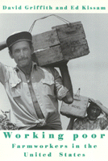

<body bgcolor="#FFFFFF" text="#000000" link="#0000FF" vlink="#CC0000" alink="#CC0000"><center><hr width="350" size="1" align="center" noshade>A highly readable national overview of migrant labor patterns<hr width="350" size="1" align="center" noshade><p><a href="https://cdcshoppingcart.uchicago.edu/Cart/ChicagoBook.aspx?ISBN=9781566392389&&PRESS=temple" target="_top">Buy this book!</a> | <a href="https://cdcshoppingcart.uchicago.edu/Cart/Cart.aspx?PRESS=temple" target="_top">View Cart</a> | <a href="https://cdcshoppingcart.uchicago.edu/Cart/Cart.aspx?PRESS=temple" target="_top">Check Out</a></p><p></p></center><!--none//--><h1>Working Poor</h1>
<H2>Farmworkers in the United States</H2>
<h3>David Griffith and Ed Kissam with Jeromino Camposeco, Anna García, Max Pfeffer, David Runsten, and Manuel Valdes Pizzini </h3>
<P>cloth 1-56639-238-1 $80.50, Feb 95, <FONT COLOR=#990033>Out of Stock Unavailable</FONT>
<br>paper 1-56639-239-X $24.95, Jan 95, <FONT COLOR=#990033>Out of Stock Unavailable</FONT>
<br>Electronic Book 1-43990-636-X $25.95 <FONT COLOR=#990033>Out of Stock Unavailable</FONT>
<BR> 368 pp
6x9
17&nbsp;tables 1&nbsp;map(s) 25&nbsp;halftones
</P><BLOCKQUOTE><I>"[A] welcome resource for scholars interested in U.S. commercial agriculture and labor migration from both a theoretical and policy perspective. Though the book is densely packed with data, its clear prose makes it accessible to advanced undergraduates, as well as graduate students."</I>
<br>&#151<b><I>Journal of Political Ecology</I></b><I></I></BLOCKQUOTE>
<p><I>Working Poor</I> investigates the lives and working conditions of migrant farmworkers in seven regions of the United States. The community studies in this volume include descriptions and analyses of the low-income neighborhoods of Immokalee, Florida; Parlier, California; Weslaco, Texas; and Mayagüez, Puerto Rico, where growers and farm contractors put immigrants to work in fruit and vegetable harvests. The authors link farmworker communities that have winter growing seasons with summer labor supply demand regions in the northern United States, in particular south-western Michigan, New Jersey, and the Delmarva Peninsula of Maryland and Delaware.
<p>The authors investigate ethnic succession in the farm labor market and the ways individual farmworkers, farmworker families, and networks organize these migrations and attach themselves to farming operations by a variety of social relations. Framing the portraits of crowded households, the histories of networks, and the ethnic vignettes are three chapters placing the community studies into historical and theoretical perspectives. This broad framework underscores the importance of housing, transportation, networks, labor contracts, and ethnic relations in the organization of low-wage labor markets.
<BR>&nbsp;<h2>Reviews</h2>
<p>Read a <a href="http://www.findarticles.com/p/articles/mi_m1153/is_n5_v119/ai_18500674" target="new">review</a> from <i>Monthly Labor Review</i>, May 1996, written by Michael Wald.
<BR>&nbsp;<h2>Contents</h2><P>
<p>List of Tables
<br>Preface
<p><b>Part I: Introduction</b>
<br>1. The Formation of Agricultural Labor in the United States
<p><b>Part II: The Community Studies</b>
<br>2. Waves of Ethnicity: Immokalee, Florida
<br>3. Migrant Workers on the Delmarva Peninsula Maryland Tomato and Delaware Potato and Mixed-Vegetable Farms
<br>4. Domestic Farmworkers in America's Heartland: Weslaco, Texas, and the Lower Rio Grande Valley
<br>5. Labor Demand in Southwestern Michigan: Last Bastion of the Family Farm
<br>6. Offshore Citizens as a Supply of Farm Labor: El Maní and Sabalos, Mayagüez, Puerto Rico
<br>7. A Labor Force in Transition: Farmworkers in the New Jersey Nursery Industry
<br>8. Northward out of Mexico: Migration Networks and Farm Labor Supply in Parlier, California
<p><b>Part III: The Community Studies in Theoretical Perspective</b>
<br>9. Characteristics of the Farm Labor Market: A Comparative Summary
<br>10. The Poverty of Conventional Thought: Social Theory and the Working Poor
<p>Appendix: Methods, Sampling, and the Rationale for the Community Study Approach
<br>Notes
<br>References
<br>About the Author
<br>Index
</P><BR>&nbsp;<H2>About the Author(s)</H2>
<P><b>David Griffith</b> is Associate Scientist, Department of Anthropology at the Institute for Coastal and Marine Resources, East Carolina University.</P>
<P><b>Edward Kissam</b> is Senior Research Associate at Pacific Management Research Associates.</P>
<BR><H2>Subject Categories</H2>
<p><A HREF="/tempress/labor.html" TARGET="_top">Labor Studies and Work</a>
<BR><A HREF="/tempress/race.html" TARGET="_top">Race and Ethnicity</a>
</p>
<p align="center"><a href="https://cdcshoppingcart.uchicago.edu/Cart/ChicagoBook.aspx?ISBN=9781566392389&&PRESS=temple" target="_top">Buy this book!</a> | <a href="https://cdcshoppingcart.uchicago.edu/Cart/Cart.aspx?PRESS=temple" target="_top">View Cart</a> | <a href="https://cdcshoppingcart.uchicago.edu/Cart/Cart.aspx?PRESS=temple" target="_top">Check Out</a></p><p><font face="Arial" size="1"><a href="copyright.html" onMouseOver="window.status='Web Copyright Policy';return true;" onMouseOut="window.status=''" title="Web Copyright Policy">&copy;</a> 2015 <a href="http://www.temple.edu" target="new" onMouseOver="window.status='Link to Temple University home page';return true;" onMouseOut="window.status=''" title="Link to Temple University home page">Temple University</a>. All Rights Reserved. http://www.temple.edu/tempress/titles/1141_reg.html</font></p>